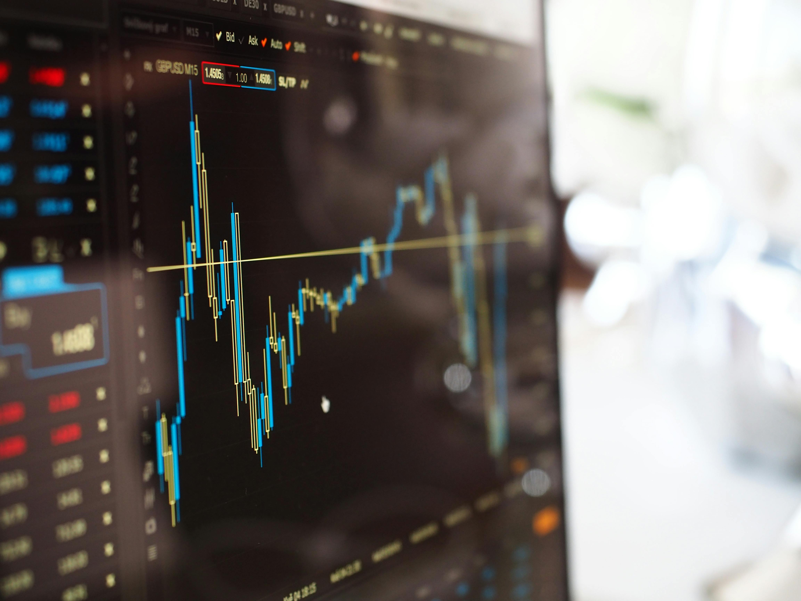
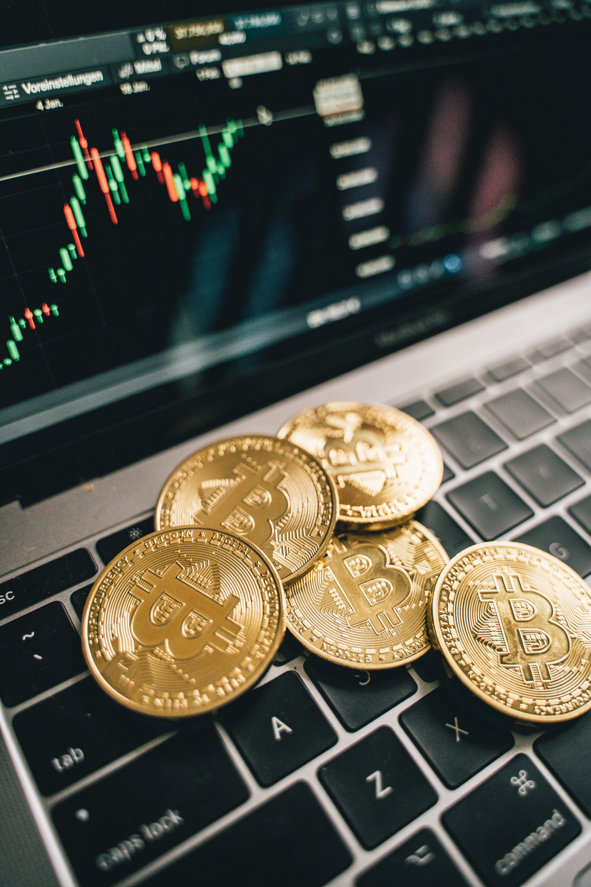

O que é a Bolsa? 📈

De um jeito simples: a Bolsa é como um grande mercado onde empresas vendem "pedacinhos" delas (ações) para pessoas que querem investir e crescer junto com elas.
É o ambiente onde a economia pulsa, permitindo que empresas captem recursos para projetos e investidores rentabilizem seu patrimônio de forma inteligente.
Investimentos: Moedas e Commodities

Commodities
- Boi Gordo e Soja: Pilares do agronegócio brasileiro.
- Petróleo e Minério: Essenciais para a indústria global.
- Vantagem: São bens de consumo global e protegem contra crises locais.
Moedas
- Dólar e Euro: As moedas mais fortes do mundo.
- Vantagem: Proteção (Hedge) contra a desvalorização do Real e diversificação internacional.
A Bolsa e o Nosso Dia a Dia
- Alta e Baixa: "Bolsa em alta" indica otimismo e empregos; "Bolsa em baixa" reflete incertezas e possível inflação.
- Impacto Social: Empresas usam a Bolsa para construir fábricas e infraestrutura, gerando renda para as famílias.
- Relação Global: O mercado é conectado. Se bolsas como a de Nova York caem, a Bovespa sente o impacto direto.
Mecanismos de Capital
- Captação: A empresa abre o capital (IPO) para arrecadar dinheiro sem depender de empréstimos bancários.
- Reinvestimento: Com o capital, a empresa cresce, aumenta o lucro e valoriza as ações dos investidores.
Perfil do Investidor
Conservador: Foca em segurança total e liquidez imediata.
Moderado: Aceita oscilações leves para ganhar mais que a poupança.
Arrojado: Foca no longo prazo e aceita riscos altos por lucros maiores.
Profissões do Mercado
| Profissão | Função | Média Salarial |
|---|---|---|
| Economista | Analisa o cenário do país para prever tendências. | R$ 7.000,00 - R$ 15.000,00 |
| Corretor/Assessor | Ajuda o cliente a escolher as melhores ações. | R$ 5.000,00 + Comissões |
| Analista CNPI | Recomenda compra ou venda de ativos específicos. | R$ 8.000,00 - R$ 20.000,00 |
Riscos e Como Driblá-los ⚠️
Riscos ocorrem por crises políticas ou má gestão. Como driblar: Use a Diversificação. Investir em setores diferentes protege seu patrimônio contra quedas isoladas.